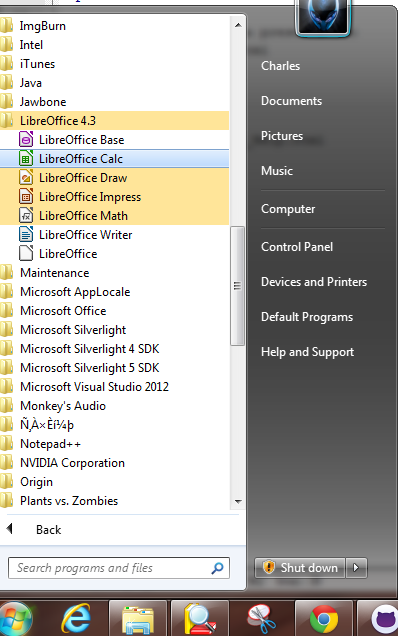
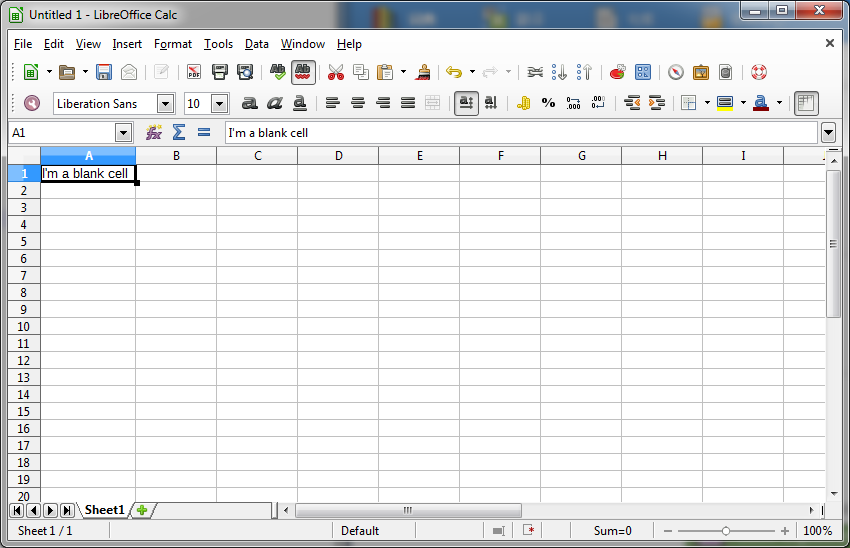
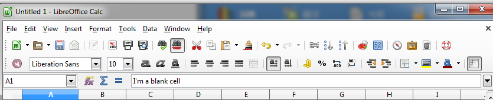

<article data-hd-class="task"> 
<h1>{{ page.title }}</h1> 
<p>Creating a spreadsheet in LibreOffice Calc.</p> 

<section data-hd-class="task/steps-informal"> 
<h2>Steps</h2>
<ol> 
<li>Open the LibreOffice Calc from the start menu.</li>

<p> </p>

<p> </p>

<li>Input data into blank cell.</li>
<p> </p>

<p> </p>
<li>Formate using LibreOffice tools as needed.</li>

<p> </p>

<p> </p>


<li>Under File menu select "Save" as necessary (Or press "Ctrl" and "s" at the same time on your keyboard). </li>
<li>Select appropriate document format and location at first time of saving the file.</li>
<li>Click "Save" button.</li>
<li>Now your works are saved.</li>
<p> </p>
<p> </p>
</section>
</article>